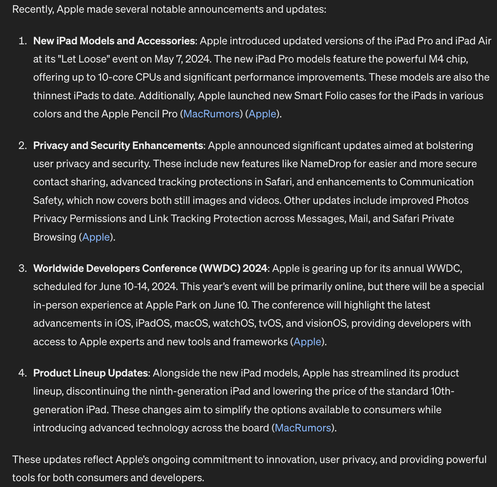
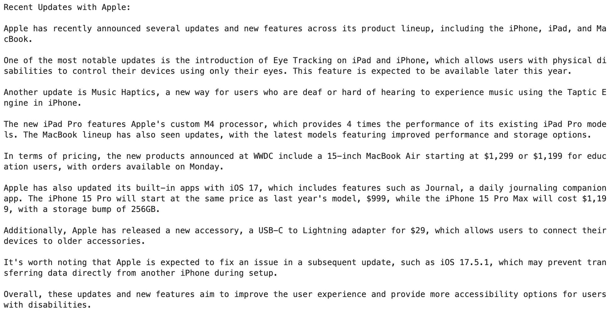
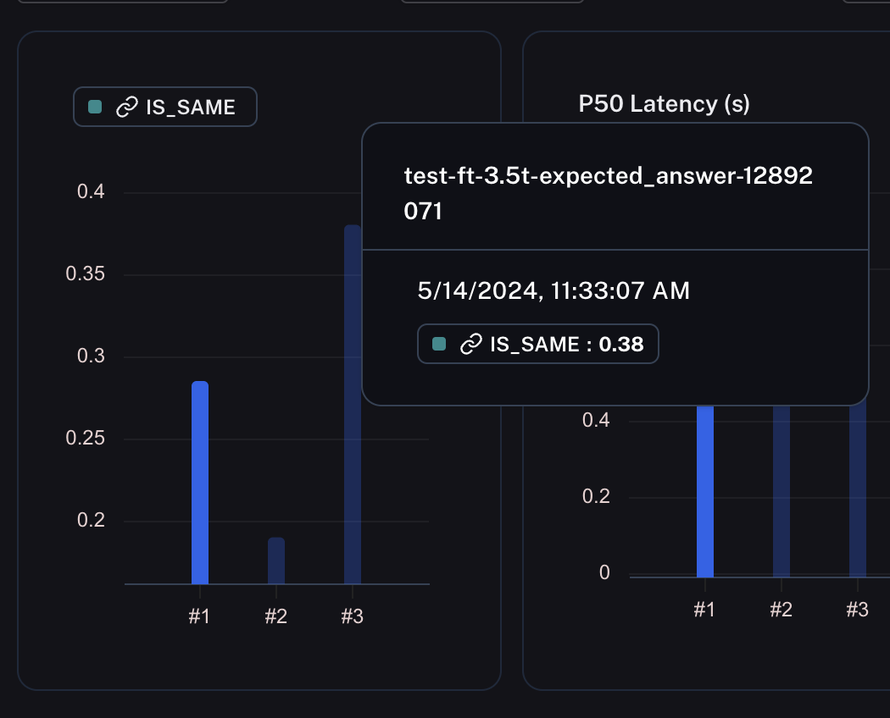
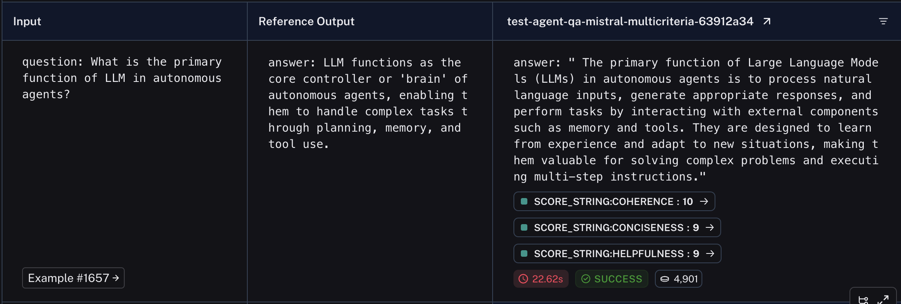
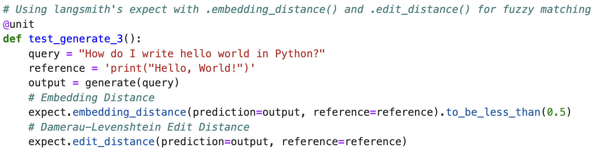

LLM benchmarks are garbage and don't tell anyone anything about how a model will perform within a given application that you're building. MMLU isn't going to tell you how well a local model will summarize domain specific context. GSM8K won't tell you how well your model will do your specific math equations (if you're still relying on pure generation for math and not calculator tool use, that's a bigger issue altogether). And a high HumanEval looks cool for large models, but large models are expensive and unnesecary for most tasks.
Only three things matter:
- Task Decomposition
- Hyperspecific Evaluation Functions
- Quality Input/Response Testing Data
Let's start with task decomposition. The biggest limiting factor of small or "less advanced" models is that they don't follow complex directions well. This limitation is almost always addressable by just breaking down your task into individual steps. Recently I made a web search "agent" using LLaMa 3 8b, attempting to imitate the web search capabilities similar to the ChatGPT and Claude experiences. I split this task up into these steps: Assess whether the web needs to be searched for up to date context (LLM Call), convert the user query into a better web search (LLM Call), search the web, synthesize the results (LLM Call). And guess what, breaking down the task into 4 steps gave me the same output as OpenAI and Anthropic web searching tool use.
GPT-4o's Response
LLaMa 3 - 8B's Response
LlaMa 3 has an MMLU score of 68.4, GPT-4o has an 88.7
Literally none of this matters for basic synthesis and text generation tasks, if your workflow is set up correctly, or you don't try to do everything at once. LLMs are unpredictable anyways, and you wouldn't want to rely on half of your task logic to be done in the black box of neural network based text generation. Fully relying on LLMs to do all steps of a problem also makes it borderline impossible to debug, fix, or produce repeatable reliable results. Your only tool to fix bugs or make improvements is then "prompt engineering." Shuddering at the thought. Stop relying on a "bigger model better logic" mentality, and make your supporting foundation good instead.
So if generic benchmarks aren't useful, then what is? Your own domain specific, context specific, task specific, custom evaluators. Essentially, make your own tests that are relevant to the application you are building. This is pretty much the only way you'll be able to accurately and effectively test a language model's ability to perform within your program.
What does this look like? Let me discuss some specific examples of what I've put together. These are more robustly broken down with relevant code in my video, but the ideas stay the same. For a fine tuned model comparison classification task, this was relatively simple. I had a set dataset of social media comments, and reference emotion labels. The scoring was then, how similar to the reference was my model's output? I could then run multiple models through this evaluation, and see the aggregate score across my reference examples to directly compare each, now with actual numbers.
This is great, but it's not always that simple. LLMs don't output data, they output content. So how do you evaluate content? In that case, the larger models can actually be useful in advanced reasoning. For a measure of of objectivity, you can use a big expensive model to look at a reference question and a reference answer, and score the model output to the reference question compared to the reference answer. This is also great, but only as far as you trust LLMs to reason (which should not be much).
For a slight mix of the two, it might be better to do fuzzy matching for output. I.e., unit tests for a code generating model. It's possible to test how similar a string is to another using embeddings or edit distance scoring. I test how similar output python functions are to expected python functions, and thus have my score. Or, pick for keywords. If you have a model generating SQL and run it on a reference question for a table you KNOW it should pick up from. Create a test that looks for that specific key value within the text. The world is your oyster.
You can have the coolest tests, but they all rely on something: Quality testing data. This is the hard part, as this is hard to automate the collection of. LLMs are not data crunching number outputters, they spit out words either as completions or answers (most of the time). Quality testing data then takes a unique form, usually of expected question and desired answer. Literally a user query, and the desired response that you want. This is the hard part, because someone has to make this data, and if you're testing, you want a lot of testing data. QnA pairs, or input/output strings are not very simple to automatically create. This takes a lot of manual effort. However, just look at OpenAI. They do this manual effort (through a lot of contractors) of creating and writing expected text for their reinforcement learning, and their reward for it has been obvious. Similar to their approach, you need quality testing data to benchmark against. Don't rely on an LLM to generate this either, as that's precisely what you'll be testing. Combining your specific, quality testing data with specific evaluation functions can then give you an actual idea of how well specific models/prompts/parts of your program are actually operating. This is a difficult, yet useful step. One shortcut I'll provide is to log user input and model response. You can use the good ones as testing data later on down the line.
In short, general evaluations tell us nothing. Hyperspecific evaluations can help tell us something. The quality of your testing data can tell us everything.